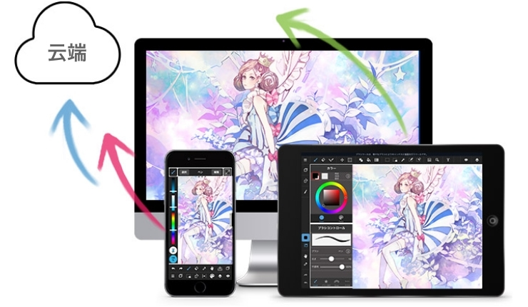
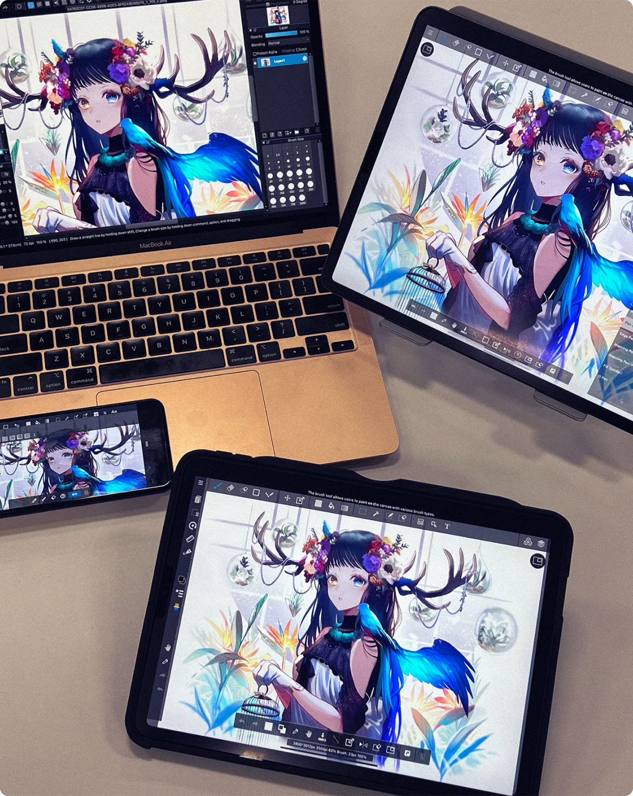

"MediBang Paint 踩坑指南：免费版看着简单，几个地方真的会翻车"
"作为一款主打漫画与插画的免费绘画工具，MediBang Paint 上手门槛不高，但云端容量、画布尺寸、账号绑定这几个地方如果一开始没注意，画到一半才发现问题就很被动。"
MediBang Paint 我用了快一年，从手机上随手涂鸦到正经画同人志原稿，一路走来该踩的坑基本都踩过了。它的官网对外主打漫画与插画创作，表面上就是个免费画图工具，下载装上就能开画，但几个隐性限制如果没提前摸清楚，等作品堆到一定规模才发现不对劲，补救成本会相当高。下面几个坑是我真金白银换回来的教训。
第一个坑：云端看着无限用，其实 3GB 说满就满
我第一次用云端保存时根本没注意容量限制，心想反正免费的存几张图能多大。结果一个 16 页的短篇漫画存进去，加上之前零散的插画，有一天突然就存不进去了——应用提示「云端容量已用尽」，我当时以为是网络问题，反复卸载重装折腾了半小时。
症状是新作品再也无法保存到云端，已存的云端作品在应用里也打不开，点进去直接报加载失败。原因其实很简单，免费版只给 3GB 云端容量，而且这个容量的消耗比你想的要快得多。素材包里提到的一个关键点我后来才搞明白：云端账单里的「储存使用量」不等于文件大小本身，版本历史会叠加消耗。你保存一次就多一个历史版本，版本留得越久、保存越频繁，使用量涨得越快，远不止 mdg 文件本身的大小。
解法有两层。提前预防的话，重要作品尽量本地和云端双存，不要只押一端。超容之后也别慌，超出的数据不会立刻被清掉，有一定期限让你处理——去云端管理页面删掉不需要的旧版本和废弃作品就行，版本历史在免费版只保留最近 3 代，没必要囤太多。真急着用的话，可以手动把旧作品移到本地文件夹，腾出空间再回来。

第二个坑：画布尺寸和 DPI 选错，后面想改几乎不可能
刚上手时我以为新建画布随便选一个就行，反正画的过程中可以调。结果画了半本同人志、准备导出印刷时才发现 DPI 只有 150，导出的图放大就糊得厉害。我在应用里找了一圈，没找到「修改画布 DPI」的入口——新建画布时的尺寸和分辨率设定，确定后基本就锁死了。
症状就是画了一半想改成印刷用的 350dpi，找不到哪里调，导出后放大糊成马赛克。原因是 MediBang 把画布的物理参数在创建时就固化了，dpi 决定的是每英寸的像素密度，事后改 dpi 本质上是重采样，画质损失不可逆。如果一开始选了 72dpi 的屏幕画布，后期硬拉到 350dpi 只会把像素放大，不会凭空增加细节。
解法就是新建画布时想清楚用途再动手。medibang文档里说得很清楚：网上发布用 72～150dpi 足够，印刷和投稿原稿必须 350dpi 或 600dpi。拿不准的话直接用漫画模板里的预设，比如「同人志 A5 成品 350dpi」这类，预设本身就带好漫画导引线（基本框和裁切框），出错率最低。别嫌麻烦，新建时多看一眼下拉菜单比画完重画要省事得多。
第三个坑：漫画功能全要登录，不注册等于半残废
第一次用漫画项目功能时我没登录，点「新建漫画项目」按钮没反应，以为是应用 bug，去应用商店重新下载了一遍还是不行。后来才知道，漫画项目、云端协作、跨设备同步这些核心功能，全部需要登录 MediBang 账号才能用——账号本身免费，但不注册等于只能用最简单的单张画布模式。
症状就是点漫画相关的按钮没有任何反馈，新建漫画项目、加入团队这些操作全部静默失败，也不弹提示。原因是漫画项目本质上是云端工程管理功能，需要账号来归属项目。素材里的提示也明确写了「漫画项目管理功能需要登录 MediBang 账号（免费注册）后使用」，但第一次看到的人很容易忽略这个前置条件。
解法很简单，装完应用第一件事就注册登录，别等用到相关功能时才发现卡壳。账号注册不花钱，邮箱或第三方登录都行，登录之后漫画项目、跨设备接力、云端版本回溯这些功能才能正常解锁。我现在的习惯是每次在新设备上从官方下载拿安装包、装完 MediBang，先登录再开画。

第四个坑：免费版版本回溯只有 3 代，手滑涂毁大面积就找不回来
有一次画到最后一格线稿时手滑，用大尺寸橡皮涂掉了整个人物的头发层。我想着回退几步应该能恢复，结果撤销次数有限，往回溯也只找到最近的 3 个历史版本——关键那次保存刚好在改头发之前，但版本回溯只能看到更晚的，中间那版在我后续几次保存中被挤掉了。
症状就是撤销次数用完后，想从云端历史找回更早的版本，发现免费版只保留最近 3 代，之前的版本已经被覆盖。原因免费版和 Premium 在版本管理上的差异：免费版版本回溯限最近 3 代，Premium 不限。如果你在创作过程中频繁保存，版本号涨得快，关键的中间版本很容易被新的历史版本顶掉。
解法是养成关键节点手动「存备份」的习惯。画完一个阶段（比如草稿完成、线稿完成、上色完成），手动把当前作品导出一份本地副本，不要只靠云端自动版本。真的手滑搞砸了，本地备份就是你的保险绳。如果作品本身很重要，也可以考虑订阅 Premium，但对大多数个人作者来说，定时手动备份这个动作比花钱实在。
防坑清单
- 新建画布时 DPI 和尺寸一次想对，印刷用途别低于 350dpi
- 装完应用先注册登录，漫画功能和云端功能不登录等于用不了
- 云端只存不超过容量的成品，废稿和旧版本及时清理
- 每个创作阶段结束手动导出一份本地备份，别依赖云端版本回溯
- 免费版版本回溯只有 3 代，关键节点自己多留一手
知道这些坑之后，这软件其实相当省心——免费、功能全、跨设备接力方便，尤其是配合漫画项目管理多页原稿的时候，省的精力不是一点半点。只是入门的时候别被「免费」两个字麻痹了，几个隐性的限制提前摸清楚，后面用起来就顺了。
本文涉及的作品示例、配置参考和操作截图整理了一份完整清单，托管在三个开源仓库里，国内访问时可以根据网络情况选择镜像：GitHub 仓库的 medibang 目录维护着最完整的英文与日文资料同步版本，Gitee 和 GitCode 上各有一份镜像副本供国内用户快速拉取，三个仓库保持同一份目录结构，内容同步更新。